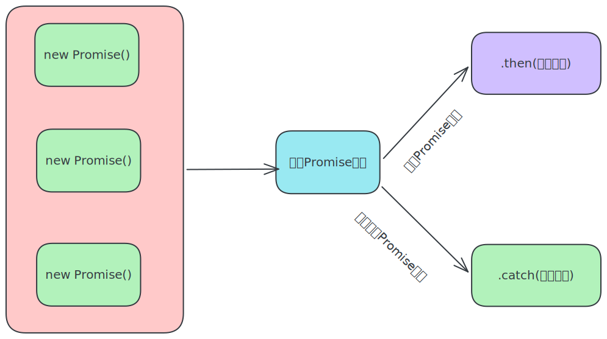

Promise.all静态方法
概念:合并多个Promise对象,等待所有同时成功完成(或某一个失败),做后续逻辑

语法:
const p = Promise.all([Promise对象,Promise对象,...])
p.then(result=>{
//result结果:[Promise对象成功结果,Promise对象成功结果,...]
}).catch(error=>{
//第一个失败的Promise对象,抛出异常
})
需求:同时请求"北京","上海","广州","深圳"的天气并在网页尽可能同时显示!!